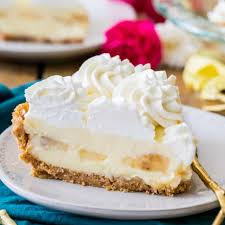

Banana Cream Pie

Description
Try this banana cream pie recipe for a cool, rich pie with extra banana flavor.
Ingredients
- 4 cups heavy cream, divided
- 1/2 cup crushed ice
- 1 (3.4 ounce) package instant vanilla pudding mix
- 3 bananas, sliced
- 1 (9 inch) pie shell, baked
Steps
- Using an electric mixer, whip 3 cups heavy cream on low speed until it starts to thicken. Add crushed ice and continue to whip another 4 minutes. Increase the speed and add vanilla and banana pudding mixes; whip until fully blended and the mixture thickens. Increase the speed to high and beat until mixture is stiff.
- Line the bottom and halfway up the sides of the pie crust with banana slices. Cover bananas with 1/2 of the cream mixture, layer with remaining banana slices, and top with remaining cream mixture.
- In a small bowl, whip remaining 1 cup cream until stiff peaks form. Using a pastry bag, pipe cream on top of pie until completely covered. Refrigerate for 1 hour before serving.